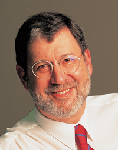
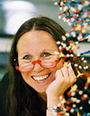

Keynotes Presentations
posted 23 Sep 2006
| Eran Segal ISCB Overton Prize Computer Science and Applied Mathematics Department Weizmann Institute of Science |
|
Date: Monday, July 23 Biography: Eran Segal received a B.Sc. (summa cum laude) in Computer Science from Tel-Aviv University in 1998, and a Ph.D. in Computer Science and Genetics from Stanford University in 2004, for work done with Daphne Koller. His doctoral research focused on developing a statistical modeling language that can integrate heterogeneous types of genomic data. Three of his thesis publications received the best paper and best student paper awards at ISMB and RECOMB. Following a research fellow position at the center for physics and biology at Rockefeller University, Dr. Segal joined the Weizmann Institute as a senior scientist in 2005. His lab at Weizmann develops quantitative statistical models, aimed at understanding how molecular components interact to carry out complex biological functions. His current focus is on transcriptional control, translational control, and chromatin structure. Work in the latter direction culminated in the discovery that genomes encode an additional layer of genetic information, superimposed on top of the genetic code, which specifies the preferred placement of nucleosomes on the genome. The results suggested that genomes utilize this nucleosome positioning code to facilitate specific chromosome functions, including transcription factor binding and transcription initiation. These discoveries were published in Nature, and in the July 25, 2006 issue of The New York Times. Presentation Title: Quantitative Models for Chromatin and Transcription Regulation Presentation Abstract: Precise control of gene expression lies at the heart of nearly all biological processes. However, despite enormous advances in understanding this process from both experimental and theoretical perspectives, we are still missing a quantitative description of the underlying transcriptional control mechanisms, and the remaining questions, such as how regulatory sequence elements ‘compute’ expression from the inputs they receive, are still very basic. In this talk, I will present our progress towards the ultimate goal of developing integrated quantitative models for transcription regulation, spanning all aspects of the process, including the DNA sequence, regulators, expression patterns, and chromatin structure. I will first describe a novel thermodynamic model that computes expression patterns as a function of cis-regulatory sequence and the binding site preferences and expression of participating transcription factors. I will show that when applied to the segmentation gene network of Drosophila, the model accurately predicts the expression of many known cis-regulatory modules, even across species, and reveals important organizing principles of transcriptional regulation in the network: that both strong and large numbers of weaker binding sites contribute, leading to high occupancy of the module DNA, and conferring robustness against mutation; and that clustering of weaker sites permits cooperative binding, which is necessary to sharpen the patterns. I will then describe quantitative models for chromatin, that capture the DNA sequence preferences of nucleosomes and the way in which they specify the genome-wide nucleosome organization, and show that these predictions have significant correspondence to measured nucleosome positions in vivo. Our results suggest that genomes utilize a nucleosome positioning code to facilitate specific chromosome functions, including transcription factor binding and transcription initiation. Homepage: |
| Temple F. Smith ISCB Senior Scientist Accomplishment Award Boston University, College of Engineering, Department of Biomedical Engineering BioMolecular Engineering Research Center |
|
Date: Wednesday, July 25 Biography: Dr. Temple Smith graduated with a Ph.D. in Nuclear Physics from the University of Colorado in 1969. During a joint postdoctoral fellowship under the direction of the mathematician, Stanislaw Ulam, and the molecular biologist, John Sadler, he helped carry out a detailed analysis of the E. coli Lac operator mutations. In 1979, Dr. Smith was a founder of GenBank at Los Alamos. There he developed with Walter Goad a statistical mechanical model of the Lac operon system similar to those now being developed in system biology. Dr. Smith is also a co-developer with Michael Waterman of the Smith-Waterman sequence alignment algorithm, the standard tool underlying most DNA and protein sequence comparison. Dr. Smith spent a sabbatical year working with Harold Morowitz at Yale resulting in a paper on the relationship between biology, physics and history. In 1988 he moved to the Harvard School of Public Health in Boston, there organizing a computational biology research center and initiating a series of international meetings on the application of computers in modern biology. In 1991 the center moved to Boston University, becoming the BioMolecular Engineering Research Center in the College of Engineering where Dr. Smith has served as director and professor of Biomedical Engineering ever since. Working there with Dr. Richard Lathrop and others, he helped develop new protein threading and Discrete State software. Dr. Smith has continued his research in many areas, including the time calibration of HIV viral evolution, the modeling of the WD-repeat protein family (with the late Dr. Eva Neer), a full-genome comparative evolutionary analysis of the Drosophila clade, and the implications for the origin of the eukaryotic cell of the evolutionary analysis of the ribosomal proteins. Dr. Smith is an avid skier, ice climber, sailor, hockey coach and family man with four sons. He is also the co-founder of the gene and protein engineering company, Modular Genetics, Inc. in Cambridge, Massachusetts. Presentation Title: Computational Biology: What is next? Presentation Abstract: It is often helpful to know your past in order to project the future. Clearly part of the discipline of biology dates back at least to J.B.S. Haldane and D’arcy Thompson in the first half of the 20th century. Then there is the critical statistical work of Luria and Delbrueck (1943) demonstrating that genetic mutations arise in bacteria in the absence of selection, rather than being a response to selection. This is to say nothing of the mathematical challenges in the earliest structural analyses of John Kendrew. Today we like to think of bioinformatics or computational biology as having become a leading example of interdisciplinary research, yet most of us are not aware of the 1964 Rutgers symposium attended by over 200 researchers from physics, chemistry, microbiology, medicine and others at which many of today’s comparative and evolutionary computational challenges were clearly laid out! Given this history, what is new? Obviously the wealth of data, and the fact that biological systems appear even more complex than we had imagined. Composed of vast numbers of both interactions and unique components, they are assembled via a long history of near random selective forces. The increased complexity would seem to require some completely new models and novel approaches toward thinking about such systems, as well as better educational approaches to train those who will help tackle these challenges. |
| Søren Brunak Center for Biological Sequence Analysis, BioCentrum-DTU Technical University of Denmark |
|
Date: Sunday, July 22 Biography: Søren Brunak, Ph.D., is professor of bioinformatics at the Technical University of Denmark. Prof. Brunak completed his early studies at the Niels Bohr Institute, University of Copenhagen, and his doctoral work in Computational Biology at the Technical University of Denmark, where he for more than 15 years has served as a researcher in the Departments of Physics, Chemistry and Biotechnology (most recently under the name BioCentrum-DTU). M.Sc. in Physics, Niels Bohr Institute, University of Copenhagen, Denmark (1987). Ph.D. in Computational Biology, Department of Structural Properties of Materials, Technical University of Denmark (1991). Dr.phil. (honoris causa), Natural Science Faculty, Stockholm University (2002). Søren Brunak is member of the Danish Academy for the Natural Sciences (1997), Board of directors, International Society for Computational Biology (2001), The Danish Academy of Technical Sciences (2002), The Danish Royal Society of Science and Letters (2004). Prof. Brunak is also highly active as member of several biotech advisory boards, as well as the Scientific Advisory Committee at EMBL, Heidelberg, the Ensembl Advisory board at the EBI/Sanger Centre (chairman), the Bioinformatics Advisory Committee at the European Bioinformatics Institute (chairman), as well as the Scientific Advisory Board at the Max Planck Institute for Molecular Genetics (Berlin). Søren Brunak has published more than 130 papers with peer-review. Most cited paper has more than 3,000 citations. Several papers have been on the Institute for Scientific Information Red Hot List, most recently in January 2006, where a paper appeared as the most cited paper within all of biology receiving around one citation per day in the period (Bendtsen et al., J. Mol. Biol. 340, 783-795, 2004), now at more than 450 citations. Most recent high-impact publications: “Dynamic protein complex formation during the cell cycle”, de Lichtenberg, Jensen, Brunak and Bork, Science, 307, 724-727, 2005. “Co-evolution of transcriptional and posttranslational cell cycle regulation”, Jensen, Jensen, de Lichtenberg, Brunak and Bork, Nature, 443, 594-597, 2006. Presentation Title: Understanding interactomes by data integration Presentation Abstract: Improved understanding of many complex, cellular mechanisms, such as the eukaryotic cell cycle, necessitates the identification of genes and proteins that belong to broad “systemic” categories, where the diversity in terms of molecular functionality is high. This also holds true for most cellular compartments, for example the nucleolus or the mitochondrion. The talk will describe a functional classification approach that can be used to establish better “components lists” for such diverse groups of proteins, where putative posttranslational modifications, sorting signals, predicted structural features, and calculated features such as chain length, amino acid composition, isoelectric point, hydrophobicity are integrated and used to infer the functional class. The approach predicts functional role categories in the “feature” space of the proteome, rather than using the “sequence” space of the genome. One important result from the work is that many proteins seem to display conservation in feature space rather than in sequence space, and the method is therefore able to transfer functional information from one species to another in new ways. This type of prediction can be integrated with experimental data, such as gene expression data and protein-protein interaction data, and interaction networks can be extracted and characterized. The talk will focus on cell cycle regulated proteins, including a comparative analysis across eukaryotic organisms. References: Dynamic protein complex formation during the cell cycle, U. de Lichtenberg, L. Juhl Jensen, S. Brunak, P. Bork, Science, 307:724-727, 2005. A Wiring of the Human Nucleolus, A.M. Hinsby, L. Kiemer, E.O. Karlberg, K.L. Co-evolution of transcriptional and posttranslational cell cycle regulation, L.J. Jensen, T.S. Jensen, U. de Lichtenberg, S. Brunak and P. Bork, Nature, 443, 594-597, 2006. |
| Stephen K. Burley SGX Pharmaceuticals, Inc. |
|
Date: Tuesday, July 24 Biography: Stephen Burley is the chief scientific officer of SGX Pharmaceuticals, Inc. (SGX; http://www.sgxpharma.com/), located in San Diego, California. SGX is an oncology focused drug discovery and development company, with Troxatyl® in clinical trials and multiple protein kinase inhibitors in preclinical development, including compounds targeting imatinib resistant BCR-ABL. Prior to joining SGX, Burley was the Richard M. and Isabel P. Furlaud professor and chief academic officer at The Rockefeller University, and a full investigator in the Howard Hughes Medical Institute. He has authored or coauthored more than 160 scholarly scientific articles. He is a fellow of the Royal Society of Canada and of the New York Academy of Sciences. Burley received an M.D. degree from Harvard Medical School in the joint Harvard-MIT Health Sciences and Technology program and, as a Rhodes Scholar, received a D.Phil. in Molecular Biophysics from Oxford University. He trained in internal medicine at the Brigham and Women\’s Hospital, and did post-doctoral work with William N. Lipscomb at Harvard University and Gregory A. Petsko at the Massachusetts Institute of Technology. With William J. Rutter and others at the University of California, San Francisco and The Rockefeller University, Burley co-founded Prospect Genomics, Inc., which was subsequently acquired by SGX. Presentation Title: Fragment-based discovery of BCR-ABL inhibitors for treatment of chronic myelogenous leukemia Presentation Abstract: SGX Pharmaceuticals, Inc. (SGX) has developed a fragment based drug discovery platform that utilizes high-throughput X-ray crystallography for lead identification/optimization. The proprietary FAST™ (Fragments of Active Structures) process exploits crystallographic screening to detect, visualize, and identify small ligands (MW 150-200) that are bound to the target protein. Each member of the FAST™ fragment/scaffold library was selected to be amenable to rapid chemical elaboration at two or three points of chemical diversity using parallel organic synthesis. Initial lead optimization involves using our knowledge of the co-crystal structure of the target-fragment complex and advanced computational chemistry tools to guide synthesis of small focused linear (one-dimensional) libraries. These linearly elaborated fragments/scaffolds are then evaluated with in vitro biochemical and cellular assays and co-crystal structure determinations. Thereafter, optimal variations at each point of chemical diversity are combined to synthesize focused combinatorial (two- or three-dimensional) libraries that are again examined with assays and crystallography. (The potential chemical diversity of the fully elaborated FAST™ fragment/scaffold library far exceeds 160 million compounds.) Active compound series are prioritized for further medicinal chemistry and compound development efforts using the results of in vitro and in vivo ADME and in vitro toxicology studies Successful applications of the FAST™ fragment-based lead discovery/optimization process will be presented for a portfolio of well validated oncology targets, including wild-type and Gleevec-resistant BCR-ABL. |
| Micheal Eisen Assistant Professor of Genetics, Genomics and Development Center for Integrative Genomics Department of Molecular and Cell Biology University of California, Berkeley |
|
Date: Sunday, July 22 Biography: Michael B. Eisen received his undergraduate degree in mathematics in 1989 and his Ph.D. in biophysics in 1996 from Harvard. His doctoral research with Don Wiley focused on the structure and evolution of influenza virus proteins. After a brief stint as the play-by-play voice of the Columbia Mules, a minor league baseball team in Tennessee, he moved to Stanford Medical School where he was a postdoctoral fellow with Pat Brown and David Botstein. He joined the Brown and Botstein labs right as DNA microarrays was being developed, and developed the methods for analyzing microarray data that transformed this technology into an invaluable tool for exploring biology. His seminal 1998 paper on cluster analysis that demonstrated the close relationship between expression patterns and gene function has been cited over 5,000 times and is the foundation for extensive subsequence research in computational analysis of genomic data. In 2000, he established his own research group at Lawrence Berkeley National Lab and the University of California, Berkeley that has focused on understanding the function and evolution of regulatory sequences. For his research accomplishments, he was named a Pew Scholar in the Biomedical Sciences in 2001 and received the 2004 Presidential Early-Career Award for Scientists and Engineers, the highest honor bestowed by the US government on young researchers. Dr. Eisen has been a forceful and effective advocate for the open exchange of scientific information. In 2000, he co-founded the Public Library of Science (PLoS), a non-profit scientific publisher and advocacy organization that is dedicated to making the world’s scientific and medical research a freely available public resource. PLoS’s success with publishing open access journals (like the ISCB’s PLoS Computational Biology) is leading to the rapid transformation of the scientific publishing industry away from the restrictive access system of subscription journals towards a fully open system that will benefit researchers across the world and the public. For his work on PLoS, Dr. Eisen has received the Benjamin Franklin Award Bioinformatics and a Wired Rave Award and been named one of Scientific American’s 50 leaders in science and technology. Presentation Title: Understanding and exploiting the evolution of the sequences that control gene expression Presentation Abstract: My lab studies how the genomic sequences that control gene expression function and evolve. We are driven by a desire to understand the molecular basis of organismal diversity, and the belief that many differences in physiology, morphology and behavior arise from changes in gene regulation. Our ultimate goal is to be able to interpret the regulatory information encoded in genomic DNA, so that we can routinely identify regulatory sequences, discern their function, predict the consequences of their perturbation, and reconstruct how they evolved. My talk will focus primarily on recent work on the evolution of regulatory sequences that control gene expression during early development of fruitflies in the genus Drosophila. I will draw on our analyses of the now 12 fully-sequenced members of this genus, as well as extensive experimental genomic data we are generating on the in vivo binding of transcription factors and the spatio-temporal patterns of gene expression in embryos of the model species D. melanogaster and several other members of the genus. I will discuss the development and application of transcription-factor specific evolutionary models to characterize the landscape of selection on transcription-factor binding sites and the gain and loss of functional transcription factor binding sites, relating both purifying selection and binding site turnover to their effects on transcription factor binding and gene expression. Our methods and results will, I hope, demonstrate the ways that our fusion of computational and experimental characterizations of biological systems is addressing fundamental questions in molecular, developmental and evolutionary biology. Homepage: |
| Anne-Claude Gavin European Molecular Biology Laboratory, EMBL, Heidelberg, Germany |
|
Date: Monday, July 23 Biography: Anne-Claude Gavin is Team Leader in the Structural and Computational Biology Unit at the European Molecular Biology Laboratory, Heidelberg. Before joining the EMBL she was a scientific director at Cellzome AG. In 2002 she received the Genome Technology All-Stars Award in proteomics. Her group has been proponent and pioneer of more general strategies aiming at understanding complex biological systems. With more than 1’200 citations, the system-wide characterization of protein complexes in a model eukaryote, Saccharomyces cerevisiae, by affinity purification and mass spectrometry is generally considered as a breakthrough. Her main research interest includes the study of biomolecular interaction, the understanding of the principles that govern the assembly and dynamics of protein networks. Presentation Title: Presentation Abstract: Anne-Claude Gavin (1,3), Patrick Aloy (1), Robert B. Russell (1) & Giulio Superti-Furga (2,3) EMBL, Meyerhofstrasse 1, 69117 Heidelberg, Germany 1. EMBL, Meyerhofstrasse 1, 69117 Heidelberg, Germany. Recent developments in the -omics field have provided comprehensive repertoires of RNAs, proteins, metabolites that constitute the cell building blocks. The next challenge resides in the understanding of how the “pieces” of this puzzle assemble, combine and contribute to the assembly of a coherent entity; a cell. Biology relies on the concerted action of a number interacting proteins and metabolites operationally organized in cellular pathways or networks. However, current appreciation of the “wiring diagram” or “molecular maps” of these pathways is scanty. We used tandem-affinity purification and mass spectrometry (TAP/MS) to perform a system-wide analysis for protein complexes in a model organism, budding yeast. The study provides one of the largest collections of physically-determined eukaryotic cellular machines; 491 complexes, of which 257 were novel. Beyond the repertoire, the analysis captures the modular nature of proteomes, where protein complexes differentially combine with additional attachment proteins or protein modules to enable a diversification of functions. Support for this organisation comes from integration with available data on expression, localisation, function, evolutionary conservation, protein structure and binary interactions. The innovative scoring system developed measures the potency of proteins to associate. It represents the first attempt to move from static interaction networks to more dynamic maps. This first “proteome equation” captures some biochemical properties of protein-protein interaction: the likelihood to be in direct physical contact and, weakly, the dissociation constants. We believe that in the future, experimental and computational refinements may turn such scoring approaches into suitable parameters for rational modeling of (entire) systems. |
| John Mattick Institute for Molecular Bioscience, University of Queensland |
|
Date: Monday, July 23 Biography:  John Mattick is Professor of Molecular Biology and Australian Research Council Federation Fellow at the Institute for Molecular Bioscience at the University of Queensland. He received his B.Sc. with First Class Honours from the University of Sydney in 1972, followed by his Ph.D. from Monash University in 1978. He has worked at Baylor College of Medicine in Houston Texas, the CSIRO Division of Molecular Biology in Sydney, and at the Universities of Cambridge, Oxford, Cologne and Queensland, where he has been based since 1988. He was the Foundation Director of the ARC Special Research Centre for Molecular and Cellular Biology, the ARC Special Research Centre for Functional and Applied Genomics, the Australian Genome Research Facility, and the Institute for Molecular Bioscience. He is a member of the Council of Scientists of the Human Frontier Science Program and a member of the Governing Body of the Asia-Pacific International Molecular biology Network. He was appointed an Officer in the Order of Australia in 2001, and awarded an Honorary Fellowship of the Royal College of Pathologists of Australasia in 2002 as well as the Australian Government Centenary Medal in 2003. His major scientific contributions have been the first delineation of the molecular architecture of a multifunctional enzyme complex (fatty acid synthase), the first genetically engineered vaccine developed in Australia, discovery of most of the genes involved in twitching motility and the biogenesis of type IV pili in bacterial pathogens, and most recently a new theory of the genomic programming of complex organisms. Presentation Title: Presentation Abstract: It appears that the genetic programming of the higher organisms has been fundamentally misunderstood for the past 50 years, because of the presumption – largely true in prokaryotes, but not in eukaryotes – that most genetic information is expressed and transacted by proteins, which are the analog components of cells. Although only about 1.2% encodes proteins, most of the human genome is in fact transcribed, the vast majority (~98%) of which is non-protein-coding RNA (ncRNA), comprising introns of protein-coding genes and introns and exons of ncRNA genes. These transcripts include complex interlaced clusters of overlapping sense and antisense transcripts, and “intergenic” transcripts. Many of these transcripts are cell- or tissue-specific, and we have identified large numbers of ncRNAs that are dynamically regulated during embryonal stem cell differentiation, muscle cell differentiation, macrophage and T-cell activation, and male and female gonadal development, among others. Some of these transcripts are processed to small RNAs, including miRNAs that regulate the translation or stability of mRNAs to control many aspects of development, snoRNAs that direct modification of other RNAs, and piRNAs that are expressed in testis. RNA signaling is also involved in chromosome dynamics and chromatin modification. Most snoRNAs and miRNAs remain to be identified, and it appears likely that there may be tens or even hundreds of thousands of these and other classes of yet-to-be-discovered regulatory RNAs in humans and other mammals. These observations, combined with theoretical and empirical studies that show that regulation scales non-linearly with complexity, and the increasing number of genetic phenomena shown to be RNA-directed, suggest that the majority of the genomes of complex organisms is not comprised of evolutionary debris but rather is devoted to an advanced and highly parallel genetic operating system transacted by regulatory RNAs that direct the trajectories of differentiation and development via control of epigenetic memory, promoter selection, splicing, RNA editing, mRNA stability and mRNA translation. The evolution of this system was almost certainly the prerequisite for the metazoan radiation. RNA regulation occurs in all organisms, but progressively dominates genomic programming as developmental complexity increases. Regulatory RNA networks also likely underpin most developmental and phenotypic differences between species and individuals, as well as many complex diseases and cancer. Homepage: |
| Erin K. O’Shea Howard Hughes Medical Institute Harvard University, Department of Molecular and Cellular Biology Harvard University, FAS Center for Systems Biology |
|
Date: Sunday, July 22 Biography: Dr. O’Shea is an Investigator of the Howard Hughes Medical Institute, Director of the Harvard FAS Center for Systems Biology and Professor of Molecular and Cellular Biology at Harvard University. She received her undergraduate degree in biochemistry from Smith College and her Ph.D. degree in chemistry from the Massachusetts Institute of Technology, for work done with Peter Kim. She carried out postdoctoral research with Robert Tjian at the University of California, Berkeley, and with Ira Herskowitz at the University of California, San Francisco. Dr. O’Shea’s honors include the National Academy of Sciences Award in Molecular Biology, a David and Lucile Packard Foundation Fellowship, a Presidential Faculty Fellow Award, the American Society for Cell Biology–Promega Early Career Life Science Award, and the Irving Sigal Young Investigator Award from the Protein Society. She is a member of the American Academy of Microbiology, the American Academy of Arts and Sciences, and the National Academy of Sciences. Presentation Title: Dissecting Transcriptional Network Structure and Function Presentation Abstract: Dissecting Transcriptional Network Structure and Function *Howard Hughes Medical Institute, FAS Center for Systems Biology, Department of Molecular and Cellular Biology, Harvard University, Cambridge MA 02138 To gain insight into transcriptional network structure and function we are studying the response of budding yeast to hyper-osmotic stress. A single kinase, Hog1, controls the expression of over 300 genes by modulating the activity of several transcription factors. We have determined the influence that each transcription factor has on gene expression, both alone and in combination, by conducting systematic microarray and ChIP-chip experiments in different genetic backgrounds. Computational analyses of these data have allowed us to construct a detailed model of the interactions and activities underlying this transcriptional response. Our findings reveal a dense overlapping network structure where the Hog1 dependent transcription factors act in different combinations, at different genes, to precisely define the output. This architecture allows Hog1 to control a highly diverse transcriptional program by incorporating both osmotic stress-specific and general stress transcription factors. Most remarkably, however, we find that this network structure also allows Hog1 to activate alternate expression programs in other stress conditions, by integrating information from other pathways. We demonstrate that condition specific changes in the activity of Hog1, or the general stress transcription factors, leads to a range of expression changes at the gene level, due to the variety of transcription factor combinations and differences in their combinatorial logic. Therefore, an overlapping network architecture allows the cell to create a fine-tuned response over hundreds of genes using a minimal number of signaling pathways and transcription factors, providing an explanation for its overrepresentation among biological network motifs. |
| Renée Schroeder Max F. Perutz Laboratories, University of Vienna |
|
Date: Wednesday, July 25 Biography:  Presentation Title: Genomic SELEX for the identification of novel non-coding RNAs independent of their expression level Co-authors: Christina Lorenz, Frederike von Pelchrzim Presentation Abstract: The genome wide analysis of the transcriptional activity within cells relies on the discovery and detection of their RNAs. It was initially assumed, that most parts of the human genome are silent and do not code for essential functions. We are now realizing that probably all parts of the human genome are transcribed and massive efforts are being undertaken to detect and identify the complete transcriptomes. Bioinformatics are a successful approach for predicting transcripts with known and predictable characteristics. RNomics is an approach, during which all expressed RNAs are cloned and sequenced. Here, we proposed an additional strategy to detect functional RNAs independently of their expression levels. For “Genomic SELEX” a genomic library is constructed and used in cycles of selection and amplification to isolate RNAs with chosen properties, for example protein-binding RNAs or RNAs that bind to small ligands. I will present the results and analyses of transcripts from the human and E. coli genomes, that have high affinity to RNA polymerase II and the RNA chaperone Hfq. Homepage: |
| Terry Speed Department of Statistics, University of California at Berkeley Bioinformatics Division, Walter & Eliza Hall Institute of Medical Research, Australia |
|
Date: Tuesday, July 24 Biography: Terry Speed splits his time roughly 50:50 between the Department of Statistics at the University of California, Berkeley (Jan-May) and WEHI (June-Dec) each year. Originally trained in mathematics and statistics, he has had a life-long interest in genetics. After teaching mathematics and statistics in universities in Australia and the United Kingdom, and a spell in the Australian Commonwealth Scientific and Industrial Research Organization, he came to Berkeley 20 years ago. Since that time, his research and teaching interests have concerned the application of statistics to genetics and molecular biology. Within that subfield, eventually to be named bioinformatics, his interests are broad, including biomolecular sequence analysis, the mapping of genes in experimental crosses and human pedigrees, and functional genomics. he has been particularly involved in the low level analysis of microarray data. Presentation Title: Genome-wide genotyping: the great classification challenge Presentation Abstract: Twenty years ago the first genome-wide linkage map of the human genome involved just over 400 polymorphic loci, mostly restriction fragment length polymorphisms. Ten years ago, a comprehensive human genetic map had several thousand polymorphic loci, these being principally short tandem repeat polymorphisms, while routine genotyping would typically involve 100-400 such markers. Currently, we know over 10 million single-nucleotide polymorphisms Homepage: http://www.stat.berkeley.edu/~terry/ |